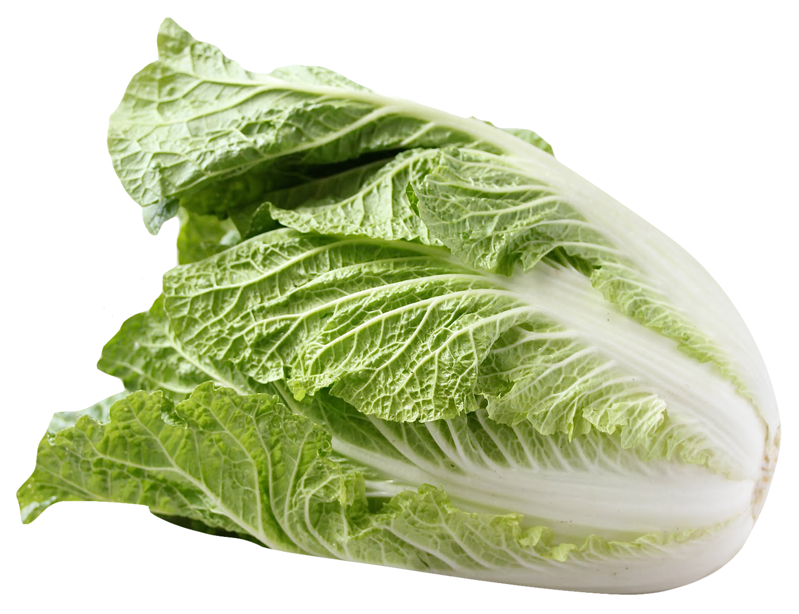
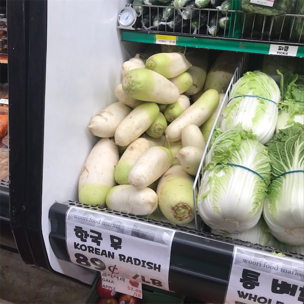
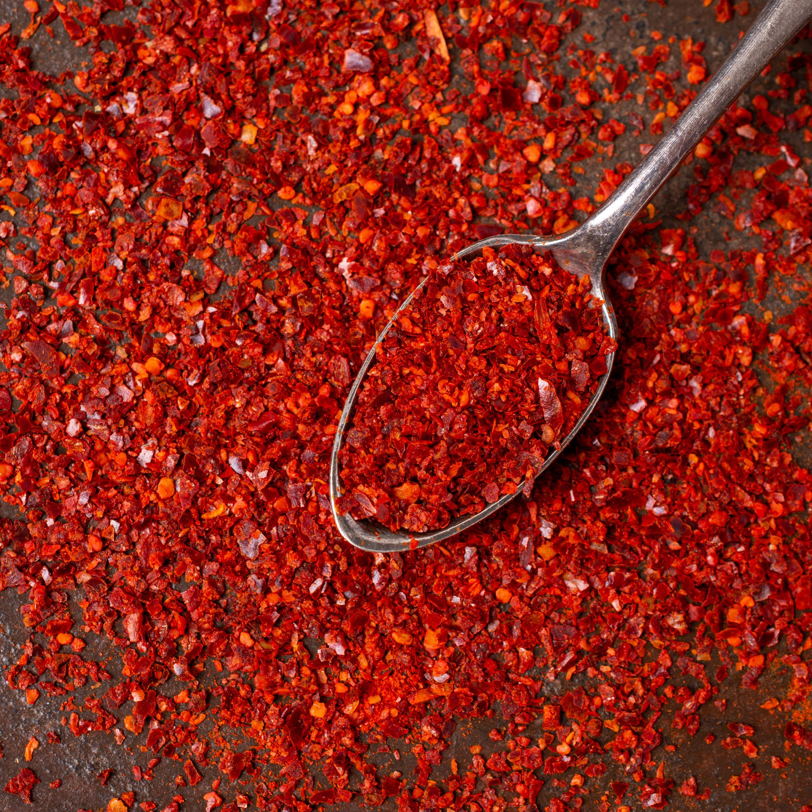
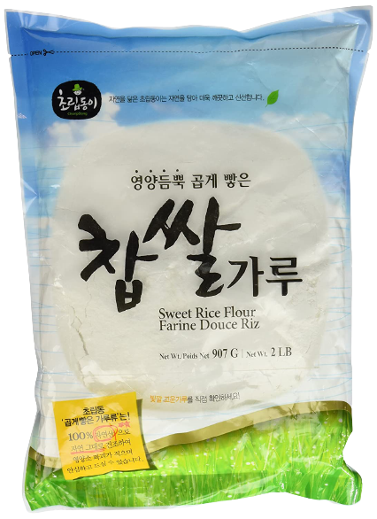
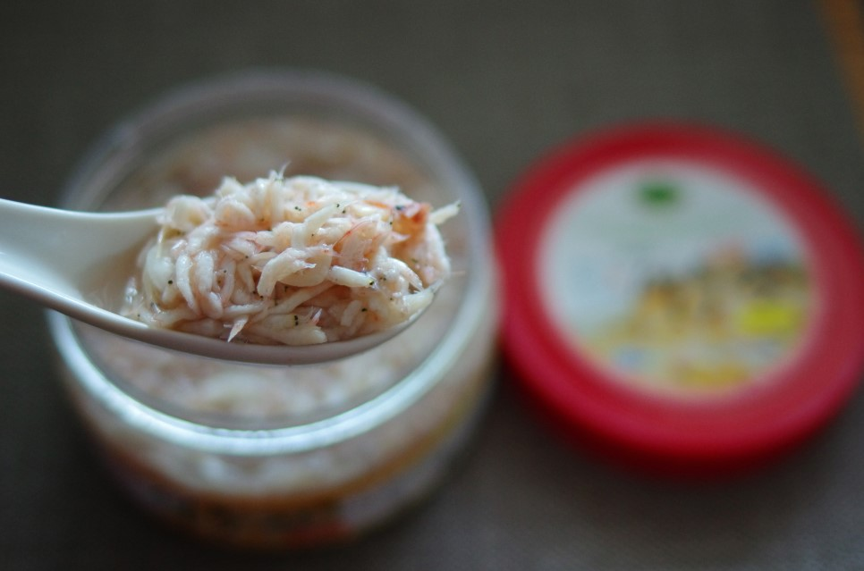
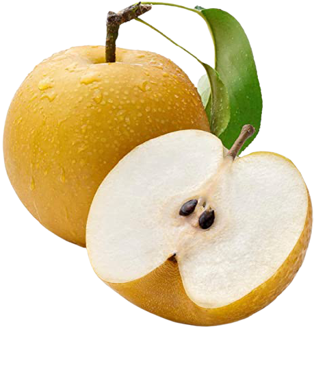
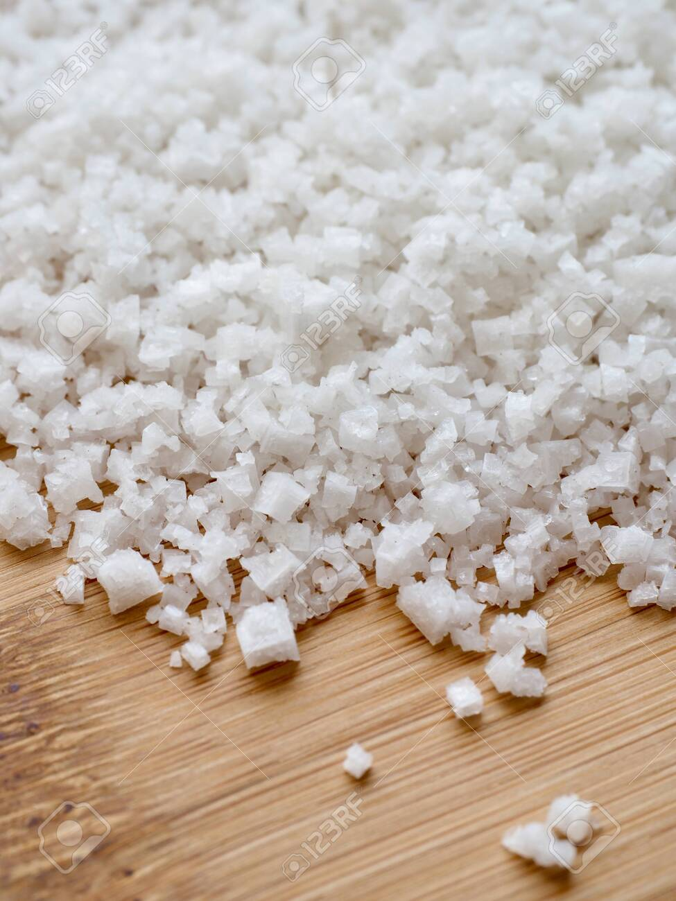

Ingredients
2 medium-sized napa cabbages
1 small Korean radish
2 stems of fresh red Korean chili peppers
1c Korean chili flakes (+ to taste)
1T sweet rice flour "chapssal garu"
0.75c mix of baby shrimp
+
anchovy fish sauce
1/2 Korean pear
1 pack of Korean sea salt
1T sugar
Kosher salt
5 - 6 large garlic cloves
1.5t minced ginger
3 - 4 scallions
1/4 bunch mustard leaves
Water
Tools
Blender
2 large bowls
1 large ziploc
Knife
Fridge space
Clean jar
Colander
Ingredients:
warm water
Korean sea salt
2 medium-sized cabbages
Tools:
knife
2 large bowls
In a big bowl, dissolve salt in warm water. Remove dirty, old outer leaves of your cabbage - throw away. Remove a few fresh, green leaves - place aside for later. Cut the top half of each cabbage lengthwise, and tear the rest with your hands.
Dip a cabbage thoroughly in saltwater. In another big bowl, grab about 2 teaspoons of salt with your hands and toss it on each cabbage leaf - from the middle with more towards the stem. Gently lay it in the bowl - face up - so the saltwater remains. Repeat for the rest of your cabbages.
Pour leftover warm saltwater over the cabbages. Put the fresh leaves you set aside in the bowl, too. Find something heavy, like a clean unopened wine bottle, and place it on top to ensure all cabbages are submerged. Leave for about 3 - 4h. Check on them from time to time, you don’t want them to get too mushy.
Ingredients:
1T chapssal powder
water
ginger
garlic
pear
fresh chili
radish
fish sauce
sugar
Kosher salt
Korean chili flakes
Tools:
ziploc
pot
knife
blender
Stir 1T chapssal powder and 1c water in a pot over medium heat. Stir continuously, so it doesn’t burn, til it becomes gluelike. Leave out to cool completely.
While that’s cooling, blend: ginger, garlic, pear, fresh chili, 1/4 small radish. Add a little water if it’s too dry and won’t mix. Julienne the other 3/4 of your radish. In a ziploc, put your paste, and julienned radish, and chili flakes. Shake it up, and refrigerate.
Ingredients:
cabbages
paste
chili flakes
fish sauce
kosher salt
cabbage leaves you saved
Tools:
colander
Check that your cabbages are brined properly. Snap a stem in half gently - if it makes a crunching sound, it’s not ready - leave it to soak longer. If it breaks sort of smoothly, but not TOO mushily, it’s ready.
Wash each leaf individually under cold water - gently but well 3-4x. Place them face down in a colander for about 30m-1h just until the water is gone. Taste your blended rub in the ziploc - it should be on the saltier side. If your rub doesn’t look red enough, add more chili flakes. If you want it saltier, add more fish sauce or salt.
Rub the paste on each leaf - more towards the top of the cabbage since it will fall towards the stem as it’s fermenting. After you do this for your first cabbage, note if you think you’ll run out of the rub. If so, add more chili flakes, fish sauce, etc to make more. Repeat for the rest of your cabbages.
Place each cabbage in your clean jar. If you’re using a flat container, place your cabbages in an alternating pattern face up, so your filling stays put. Take the fresh clean leaves you saved and cover the cabbage heads with them so your kimchi doesn’t turn out dry. No need to rub these with your paste.
04 Final check
Sometimes, you just suspect your kimchi isn’t salty enough - take the bowl with your paste in it and add about 1c water. Taste it. If this new mix isn’t salty or spicy enough for you, add more salt or chili flakes. Pour this over the kimchi in your jar. Cover the jar!
05 Wait 2 days
Leave your batch out in room temperature for 2 days. It will start smelling. Refrigerate. Enjoy with your family and friends!